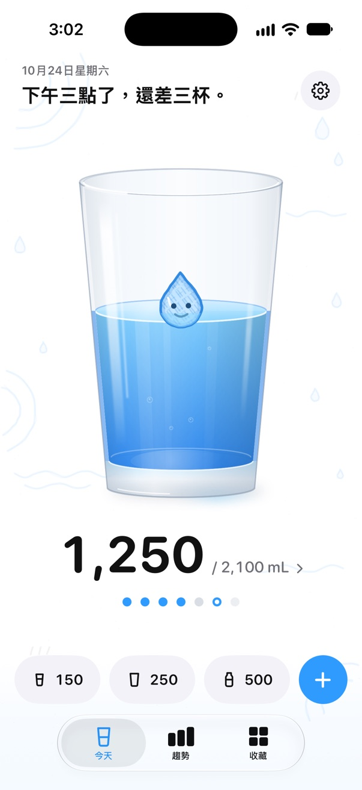
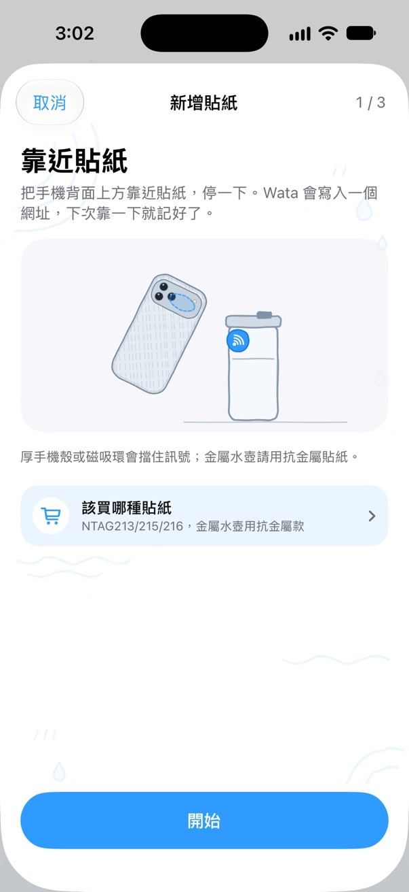
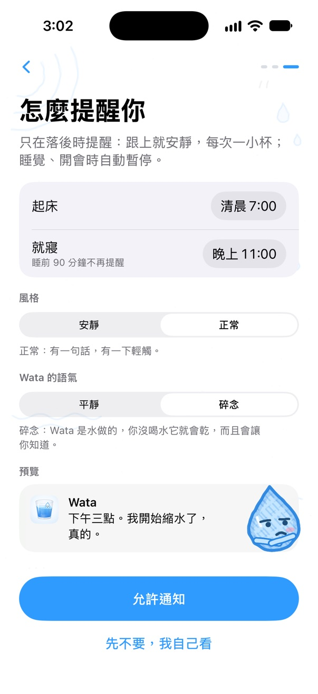
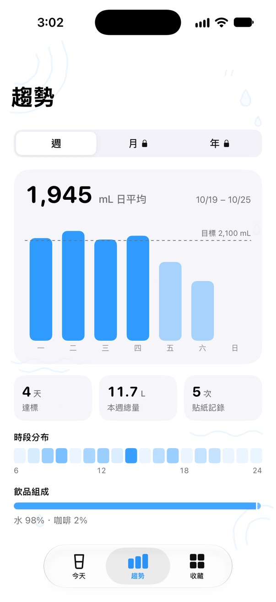
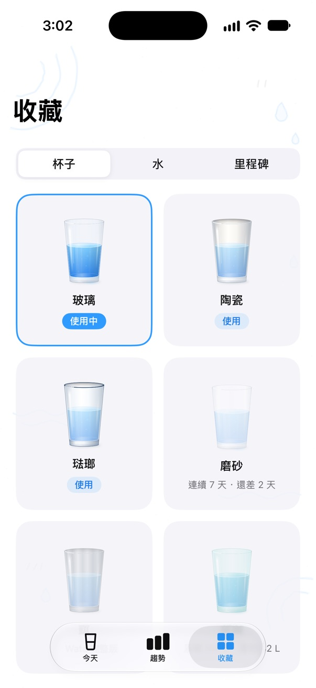
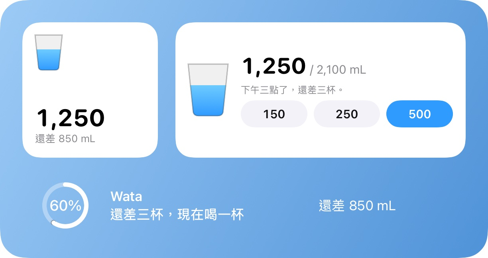
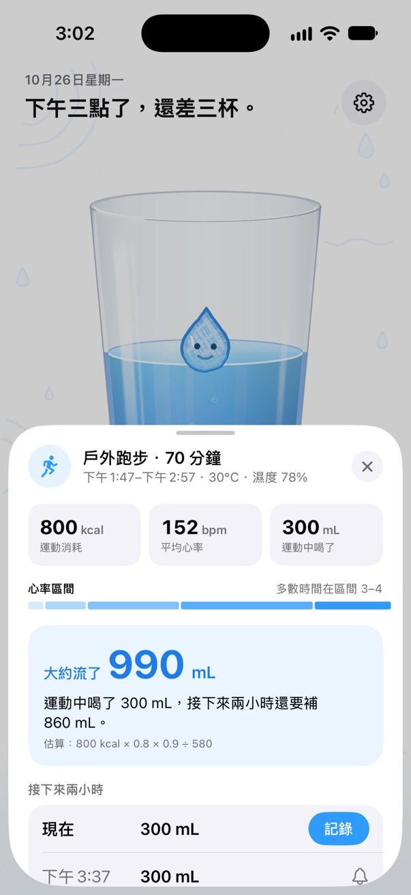

手機靠一下， 這杯就記好。
在水壺上貼一張 NFC 貼紙，iPhone 靠近、點一下跳出的橫幅，水量就進了「健康」App，不用先找 App。Wata 依今天還差多少來提醒，而不是看時鐘；牠住在一杯真實的水裡，搖一搖手機，水也會跟著晃。
即將在 App Store 上架
iPhone XS 以後的機型，iOS 18 · Apple Watch，watchOS 11

每個水壺一張貼紙
只要晶片對，任何 NFC 貼紙都能用，一杯咖啡的錢就能買好幾張。在 Wata 裡配對一次，之後靠一下就記下一整壺。
- Wata 會畫出你這支 iPhone 要拿哪裡去碰貼紙；iPhone Duo 會先請你合起來。
- 每張貼紙代表一個容器：名稱、容量、裝的是什麼。
- 幾分鐘內又讀到同一張，會先問再記，免得水壺和手機放在同一個包包裡亂記。
- 記下後 10 秒內可以改成半壺，或撤銷。
- 一家人可以共用一個杯子：每支 iPhone 各記各的。
- iPhone 要在螢幕亮著時才讀得到貼紙，並要點一下跳出的橫幅；用「捷徑」自動化，連點都不用點。

跟著你喝了多少走的提醒
Wata 依今天還差多少來排提醒；不管這杯是在哪裡記的，每喝一杯就重新排一次。
- 喝完 45 分鐘內不提醒；達標後、睡前 90 分鐘內也不吵你。
- 只在落後今天的進度時提醒：大約每 75 分鐘一則，跟上就安靜（也可以調得更少或更勤），每則只請你喝一小杯。
- 直接在通知上記一杯，或選「稍後」。
- 專注模式可設成只在整點提醒或完全不提醒，也可以選擇開會時暫停。

Wata 是水做的
杯子裡的小水滴讓你一眼看出今天過得如何：早上還沒睡醒、落後時口渴、好幾個小時沒喝就鬧彆扭、晚上還差很多就快哭出來，達標時在彩帶裡跳來跳去。

平靜下午三點了，還差 850 mL。這杯 280 mL 就好。
碎念下午三點了。我開始縮水了，真的。
碎念，被忽略兩次之後看來提醒沒什麼用。我先安靜，自己慢慢蒸發好了。
- 兩種語氣：平靜的，告訴你時間和還差多少；碎念的，是一隻用情緒勒索逼你喝水的吉祥物。
- 碎念版只會請你喝一小杯；達標後、快睡覺時，或剛喝太多太快時，牠都會安靜。
- 每則提醒都帶著 Wata 當下的表情。
- 每種語言的文案都是重新寫的，不是翻譯。
在「健康」、在手腕上、在主畫面
每一杯都以「水」記進「健康」App，其他 App 記在那裡的水只算一次。目標依你的體重、運動，以及（如果你願意）當地的天氣來算。
- Apple Watch：整個螢幕就是一杯水，水位就是今天的進度，Wata 浮在水面上；三個快速杯量、用數位錶冠微調，還有錶面複雜功能。
- 主畫面與鎖定畫面小工具、控制中心按鈕、Siri 與「捷徑」。
- 以週看趨勢；Wata 完整版可以看月、看年，還有年度回顧。
- 收藏：可以換的杯子、水的質感，和少數幾枚要努力才拿得到的里程碑，不是天天發。
- iPhone Duo：打開時杯子旁邊是今天的計畫，桌面模式變成一整排大按鈕。




運動完，把流掉的汗喝回來
體能訓練記進「健康」後，Wata 依消耗的熱量和當時的環境估算流汗量，加進今天的目標，並把該補的水分散在接下來兩個小時。
- 每 40 分鐘最多 300 mL；時間長或天氣熱的運動，會建議來一瓶運動飲料。
- 每週固定時間的運動，開始前會先提醒你喝水。
- Wata 完整版：用「捷徑」自動化在運動中提醒，絕不超過流汗量；排汗測試讓估算更貼近你；補水進度顯示在鎖定畫面。

免費使用，或一次買斷
Wata 可以免費使用，一天最多一則廣告。付一次就永久移除廣告並解鎖全部功能，全家都能用。
Wata
免費
- 記錄、提醒、「健康」與 Apple Watch、小工具、Siri
- 一張貼紙
- 以週看趨勢、運動後的補水建議
- 一天最多一則廣告：前七天沒有，記錄時絕不出現
Wata 完整版
一次 NT$90
- 永遠沒有廣告
- 貼紙想要幾張就幾張
- 全部的紀錄：月、年、年度回顧
- 所有飲品、所有杯子與所有水的質感
- 運動中提醒與排汗測試
- 支援家人共享；不是訂閱
Wata 1 的所有更新都免費，免費版的廣告也永遠不會變多。其他地區約 US$2.99，以 App Store 顯示的當地價格為準。